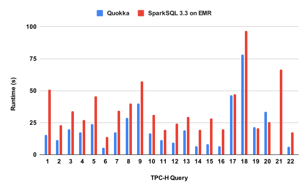

How is Quokka different from ... ?
Spark
First I have to say Matei is somewhat of a God, and Spark's design choices are simply ingenious in many cases. Most of its ingenuity is not apparent until you try to design your own system to beat its performance, which I had the good fortune of stumbling upon doing.
Now that I have paid homage to my forebearers, let me say that Quokka and Spark are very similar in terms of what they do, but there are some important differences. Spark's core abstraction is a collection of data partitions. You operate on those data partitions in stages. One stage must complete before the next one starts. Quokka's core abstraction is a stream of data partitions. You can consume a data partition as soon as it's produced. As a result, multiple "stages" can be overlapped and pipelined in Quokka, leading to higher performance.

Quokka's DataStream API resembles Spark's DataFrame API, however is not feature complete yet. Importantly, Quokka doesn't yet support SQL input, though it will in the near future. Like Spark, Quokka's API is lazy. Like Spark, Quokka has a logical plan optimizer, though it is truly a baby compared to the gorilla-sized Spark Catalyst Optimizer.
Quokka is written in Python completely on top of Ray, and integrates with Ray Data. I am collaborating with Ray Data team. If you are running complicated Python UDFs, your SQL-ish pipeline doesn't fit Spark well (e.g. time series/feature engineering workloads) or already use Ray, Quokka might be worth keeping on your radar.
Quokka is not fault tolerant, though it will be by the end of 2022. This is how I intend to be collecting my PhD, so you can be pretty darn sure it will happen.
Finally, Quokka is written by one Stanford PhD student, while Spark has billions of dollars behind it. Obviously Quokka in its current state doesn't seek to displace Spark.
Eventually, Quokka aims to be synergistic to Spark by supporting workloads the SparkSQL engine doesn't do too well, like time series or feature backfilling, on the same data lake based on open-source formats like Parquet. Quokka can do these a lot more efficiently due to its streaming-execution model and Python-based flexibility.
Modin/Dask
Quokka is a lot faster, or aims to be. I don't have benchmark numbers here, though I have found these systems to be slower than Spark.
On the other hand, Quokka does not aim to support things like machine learning training (Dask), or dataframe pivots (Modin). Quokka also doesn't seek to religiously obey the Pandas API, whose eager execution model I think is incompatible with performance in modern systems. Dr. Petersohn will say Quokka then doesn't offer a "dataframe" API. I agree -- that's not Quokka's goal.
Pandas/Polars/DuckDB
You should be using these solutions if you have less than 100GB of data. Pandas is the starter pack for data scientists, but I really encorage people to check out Polars, which is a Rust/Arrow-based implementation with pretty much the same API that's A LOT FASTER. I sponsor Polars on Github, and maybe you should too. Of course if all you want to do is SQL, then DuckDB can be a good choice.
Quokka is heavily integrated with Polars. Indeed in Quokka, if you attempt to read a data source with less than 10MB of data, it will be materialized directly as a Polars Dataframe because that's probably what you want to do anyways. Quokka's core abstraction is simply a stream of Polars Dataframes.
Ray Data/DaFt/PetaStorm
Recently there has been several attempts to bring data lake computing to unstructured datasets like images or natural language. Most prominent are probably DaFt by Eventual AI and PetaStorm by Uber. They define their own extension types for unstructured data, and try to make executing machine learning models in data pipelines efficient.
Although you can certainly use Quokka to do what those libraries do, Quokka does not focus on this application. Instead Quokka seeks to integrate with those libraries by handling the upstream structured data ETL, like joining feature tables to observations tables etc.
Of course, if your architecture is such that you are using a separate inference server with its own compute resources to conduct the machine learning, and all you have to do in your data pipeline is making RPC calls, then Quokka can definitely fulfill your needs for "unstructured ETL". Quokka just doesn't prioritize executing these deep learning functions natively inside your data pipeline.